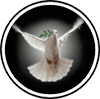

|

|
>> Содержание / Список кланов /
SacredInquisition
С незапамятных времен Свет воюет с бесконечными силами Зла.
Вопреки сказаниям силы их неравны.
Зла всегда больше, оно сильнее.
Каждый день его могущество возрастает.
Настойчиво ища трещины и лазейки в нашем сознании, оно переманивает на свою сторону новых людей, тем самым, пополняя свои ряды.
Падать вниз, забыв о принципах, всегда намного легче чем, стиснув зубы, подниматься вверх.
Только в красивых легендах и сказках все хорошее побеждает все плохое.
Но сказки и легенды врут.
Наш мир обречен на вечную войну.
Реки крови уже пролились, и никто не скажет точно, когда это закончится.
Битвы сменяются новыми битвами, смерть идет по пятам за жизнью.
Равновесия нет, оно нарушено.
Виртуальный мир жил своей жизнью. Исправно курсировали кареты между городами, шла торговля, люди дрались между собой за право называться лучшим.
Каждый в БК нашел что то свое, подстроил виртуальный мир под себя.
Вместе с остальными в проект пришел и он. Простые казалось бы вещи здесь приобретали новый смысл, и он остался вместе со всеми. Виртуальность вдруг перестала быть только плоскостью мерцающего монитора.
Он видел доблесть и подлость, дружбу и коварство, радовался торжествующей справедливости и негодовал, видя, как помыкаются негласные законы чести.
Да, Он стоял у истоков и с каждым новым днем, проведенным в сети, его второе «я» шлифовалось, прогрессировало и пришло время, когда на его плечи легла огромная ответственность.
Это была "золотая эпоха" проекта. Мудрые решения, правильные поступки, перемены к лучшему, встречи в реале. Эта ветку в истории БК можно приравнивать к "эпохе Ренессанса".
После небывалого подъёма наступил период спада.
Крест Верховного паладина со временем стал непомерно отягощать. Глаза перестали видеть то, ради чего он здесь находился. Некоторые забыли о главном и преследовали свои интересы. Внутренний конфликт не мог решиться мирным путем.
Близились смутные времена. Добровольный уход из Ордена был запрещен и он принял иное решение. Крест Верховного паладина был снят, персонаж заблокирован. Многие ушли вслед за ним, ибо не видели смысла ломать себя ради чуждых им идей.
Но не так просто было сразу отказаться от виртуального мира. Многие бывшие паладины по инерции заходили на сайт, но то, что они искали, осталось в прошлом. Не было ни крестов, ни кнопок, была только пустота. Кто то на этом и закончил свою жизнь в БК, а те немногие, решившие бороться дальше, нашли наиболее приемлемый выход из положения.
На поросших мхом холмах, вдалеке от пепла вечных битв, они основали новый клан, имя которому Святая Инквизиция.
Не становясь под знамена ни Света ни Тьмы, Инквизиция шла своим путем, мудростью и честью вписывая имена тех, кто стоял под ее сильными крыльями. Несомненно, этот путь нельзя назвать лёгким. Становясь под знамена клана, люди принимали и принимают на себя большую ответственность, сходную с работой паладина.
Поступать по справедливости – тяжкий удел. Не каждый обладает качествами, позволяющими достойно нести голубя возле собственного ника. Главная задача клана была, есть и будет одна - восстанавливать исходное равновесие.
Мы не проливаем реки крови, чтобы насладиться криками и стонами умирающих.
Не ведем войну ради войны.
Наше оружие - дипломатия.
Мы - один из самых древних и мирных кланов в клубе.
Прежде чем совершить какой либо проступок, помните об этом.
Нет особой нужды воспевать хвалу Святой Инквизиции ибо достоинство ее пути очевидно. А те, кто выдержал этот путь, кто подавлял в себе бешенство и трезво обдумывал свои поступки, кто поставил совесть превыше всего, могут с гордостью и без капли пафоса сказать: "Я – Инквизитор".
Официальный сайт клана: http://www.sacredinquisition.com
|
 |
|